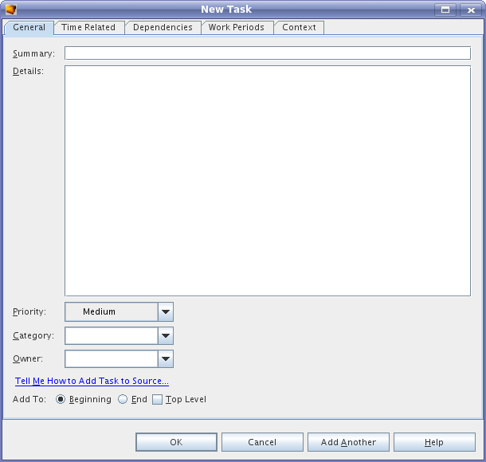
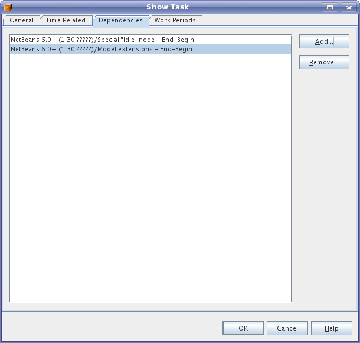
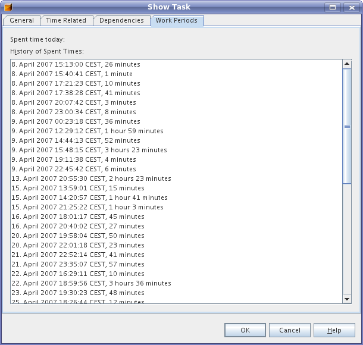
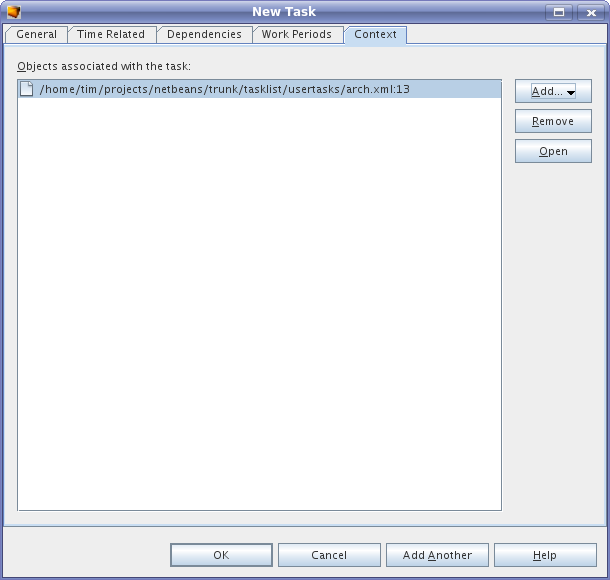

"New Task" Dialog
The "General" tab contains some common properties of a task like
summary, details, priority, category and owner. The
category and owner
fields allow you to choose from values that were already used in the
same task list.

The second tab contains some time related properties. Due field
contains a date when the task should be completed.
Effort, progress and spent time could be computed automatically.
This tab also lists time periods spent working on the task. "Collect Work Periods" option
should be
activated to use this.

On the third tab you can define dependencies for the task.

The last tab shows work periods for the task.

Multiple files/URLs optionally with line number can be associated with a task.

Comments & requests to dev@tasklist.netbeans.org.
Further information at http://tasklist.netbeans.org.